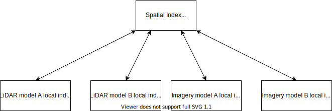
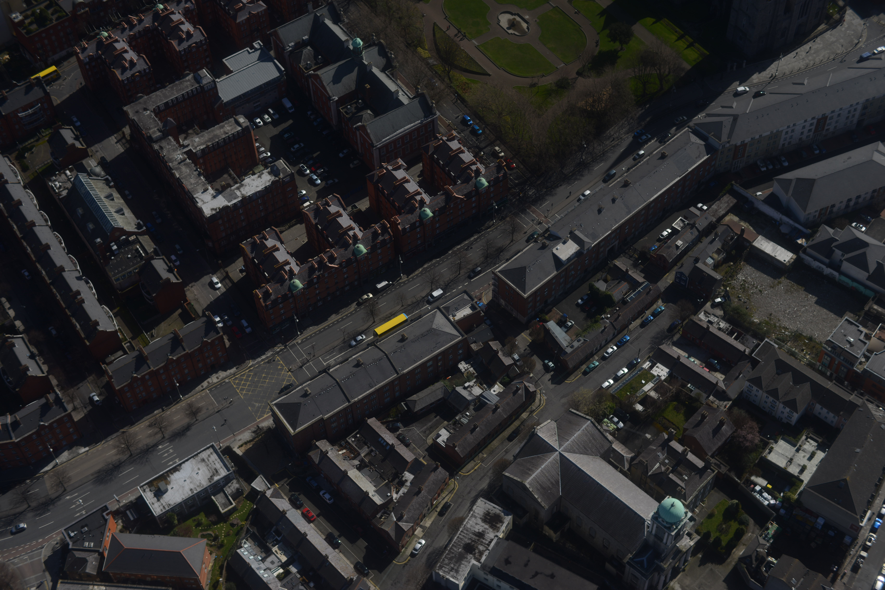
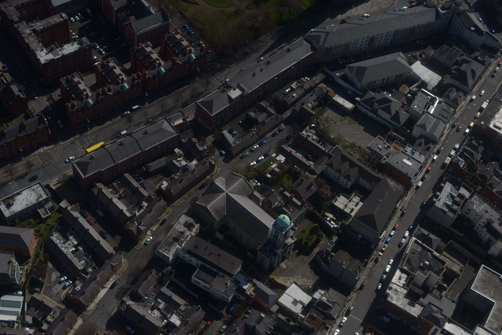
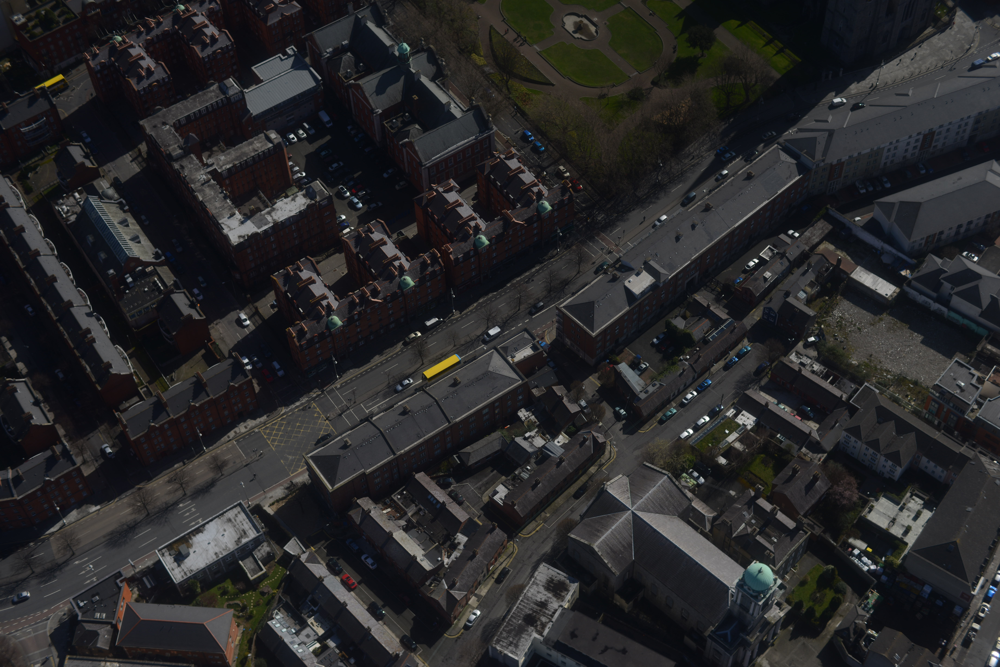
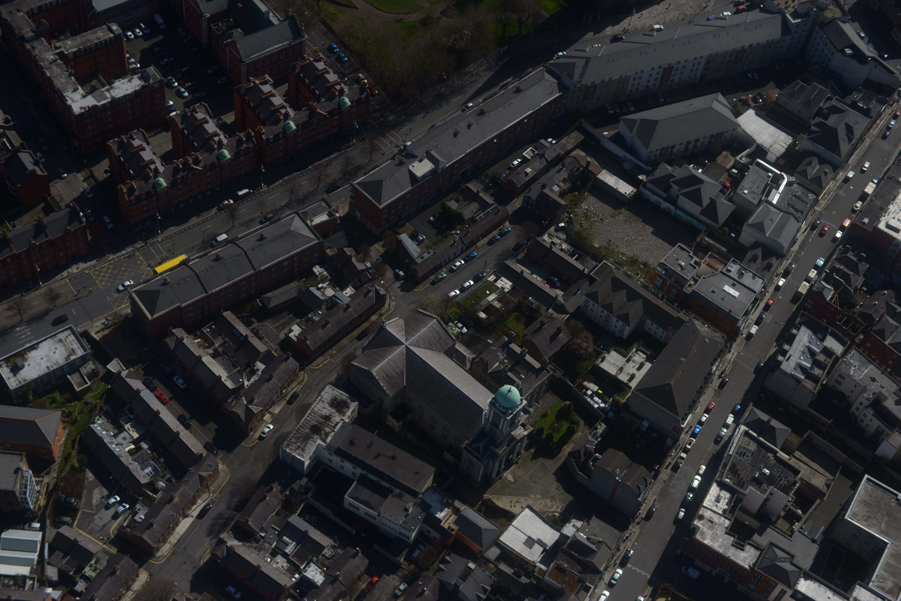

Scalable Data Systems for LiDAR and Imagery
Data Integration
PhD Stage-2 Transfer Assesment
Chamin Nalinda
 Primary supervisor:
Primary supervisor:Dr. Michela Bertolotto
Secondary supervisor:
Dr. Nhien-An Le-Khac


Volume, complexity, integration

Gaps
- Poor scalability.
- Most integrated remote sensing systems are imagery systems. (Australian Data Cube, Swiss Data Cube, EarthServer)
- Existing point cloud and imagery systems are not spatially integrated (e.g. RASDAMAN,
GeoWave)
- integrated access not studied and well developed topic.
- LiDAR point cloud data not stored in their native format.
- Data lake & polystore systems not well developed topics.
“How to enable scalable efficient access to spatially integrated voluminious, complex LiDAR and imagery data ?”
Research Questions
-
How to construct a global level spatial index atop local indexes of LiDAR and imagery data that are being managed in distributed environments? (RQ1)
Hypothesis: It will be possible to construct a multi-database oriented, global level, meta-index in a distributed environment to spatially integrate LiDAR and imagery data based on the choices made to local indexes. -
How to define an efficient integrated data system architecture to perform scalable spatial integration of LiDAR and imagery models in distributed environment(s)? (RQ2)
Hypothesis: It will be possible to define a distributed DS architecture for scalable LiDAR and imagery data integration by analysing logically centralized view (e.g. data lake) and logically de-centralized view integrated architectures (e.g. polystores), in terms of their scaling, storage models, computing paradigms and integrated system’s requirements/objectives etc. -
How to develop a scalable & performance efficient data lake that perform spatial integration between LiDAR and imagery storage models? (RQ3)
Hypothesis: : It will be possible to integrated LiDAR storage models and imagery storage models in a distributed computing and distributed database oriented logically centralized architecture - a data lake, while focusing on improving integrated query response time, and minimizing disk utilization of LiDAR and imagery data.
Progress to Date
1. 30 credits ☑
2. Literature Survey ☑
- ▶ Paper 1 :
- ▶ Paper 2 :
3. RQ 1: Global index
- ▶ RO 1.1 : Local indexes ☑
- ▶ RO 1.2: Global hashing index ☑
- ▶ RO 1.3: Global hierarchical index ☑
4. RQ 2: Architecture
- ▶ RO 2.1 : Framework
- ▶ RO 2.2: UrbanARK architecture ☑
5. RQ 3: Data lake
- ▶ RO 3.2 : Efficient encoding
Publications:[1] IEEE BigData 2019, [2] ISPRS Congress 2020
RQ 2 Framework

RQ2: Integrated Architecture
-
RO 2.1: Define a framework
-
RO 2.2:Selection of integration architecture for UrbanARK
- store data in native format
- queries of interests
RQ3: Performance efficient data lake
- RO 3.2: Improve performance of data lake
-
RO 3.2: Implementation of an efficient encoding strategy for point clouds
(made two publications)- IEEE International Conference on Big Data
- ISPRS Congress
Future Plan

Targeted venues
- ISPRS Congress - The top conference on remote sensing data management.
- 3D GeoInfo - One of the top conference on 3D data management.
- Remote Sensing of Environment (Elsevier) - Impact factor (2019): 9.085. The most prestigious journal to publish research on remote sensing
- ISPRS Journal of Photogrammetry and Remote sensing (Elsevier) - Impact Factor (2019): 7.319
- International Journal of Digital Earth (Taylor & Francis) - Impact Factor (2019): 3.097
test

Research Questions
-
How to construct a global level spatial index, in a distributed environment, atop local indexes of LiDAR and imagery data that are being managed in distributed storage environments? (RQ1)
-
How to define an efficient integrated data system architecture to perform scalable spatial integration of LiDAR and imagery models in distributed environment(s) (RQ2)
-
How to develop a scalable & performance efficient data lake that perform spatial integration between LiDAR and imagery storage models? (RQ3)
Research Questions
-
RQ1: How to construct a global level spatial index, in a distributed environment, atop local indexes of LiDAR and imagery data that are being managed in distributed storage environments?
Hypothesis: It will be possible to construct a multi-database oriented, global level, meta-index in a distributed environment to spatially integrate LiDAR and imagery data based on the choices made to local indexes
 -
How to define an efficient integrated data system architecture to perform scalable spatial integration of LiDAR and imagery models in distributed environment(s) (RQ2)
Hypothesis: It will be possible to define a distributed data system architecture for scalable LiDAR and imagery data integration by analysing logically centralized view and logically de-centralized view integrated architectures, the two state-of-the-art architectural approaches, in terms of their scaling, storage models, computing paradigms and requirements/objectives etc.

-
How to develop a scalable & performance efficient data lake that perform spatial integration between LiDAR and imagery storage models? (RQ3)
Hypothesis: It will be possible to integrated LiDAR storage models and imagery storage models in a distributed computing and distributed database oriented logically centralized architecture - a data lake, while focusing on improving integrated query response time, throughput of data loading, and minimizing disk utilization of LiDAR and imagery data.
Progress to Date
Completion of all 30 credits
Completion of literature survey
- Paper 1 : Current challenges and future directions for scalable distributed aerial LiDAR data systems development.
- Paper 2 : Scalable integrated data systems for LiDAR and imagery data integration: a survey.
RQ1: Global Index
-
RO 1.1 :Identification of suitable local indexes
LiDAR - Hilbert SFC (Vo2018)(Vo2016D)
Images - Quadtree/Hilbert SFC (Samet2006) -
RO 1.2: Selection of a multi-dimensional hashing index as the global index
Hilbert Space Filling Curve (Samet2006)(Laurini1992) -
RO 1.3: Seletion of a hierarchical index as the global index
(Samet2006)(Gaede1998)
- Object-based index - R-tree or varient of it
- Space-based index - Quadtree or varient
RQ2: Integrated Architecture
-
RO 2.1: Define a framework
-
RO 2.2:Selection of integration architecture for UrbanARK
- store data in native format
- queries of interests
RQ3: Performance efficient data lake
- RO 3.2: Improve performance of data lake
-
RO 3.2: Implementation of an efficient encoding strategy for point clouds
(made two publications)- IEEE International Conference on Big Data
- ISPRS Congress
Future Plan
Targeted venues
- ISPRS Congress - The top conference on remote sensing data management.
- 3D GeoInfo - One of the top conference on 3D data management.
- Remote Sensing of Environment (Elsevier) - Impact factor (2019): 9.085. The most prestigious journal to publish research on remote sensing
- ISPRS Journal of Photogrammetry and Remote sensing (Elsevier) - Impact Factor (2019): 7.319
- International Journal of Digital Earth (Taylor & Francis) - Impact Factor (2019): 3.097
Future Work
RQ 1 (RO 1.4): Evaluation of Global Index

RQ2: Evaluation of integration approaches
- RQ 2 (RO 2.1): Define a full framework and complete the theoritical assesment of the two integration approaches
RQ3: Implementation, performance evaluation, & investigation of possible optimizations
-
RO 3.1:
- Integration of LiDAR models
- Integration of imagery models
- Integration of LiDAR and imagery models
- RO 3.2: Improve responsetime and throughput of integrated point, range and window queries based on the devised parameter space.
- RO 3.3: Investigate hyperparameter space that define spatial index structure
- RO 3.4: Identify techniques to solve bottleneck(s) in RO 1.4, RO 3.2 and RO 3.3.
Q & A
Supporting Slides Slides
Research Question 2

Research Question 3
HyperSepectral Imaging
HSI (Goetz1985), also known as imaging spectrometry, uses spectrometer sensors to sense spatial phenomena/objects. HSI is capable of producing high spectral resolution images using extremely narrow spectral bands (around 10 nm wide(Schowengerdt2006)). These bands are precisely defined (Campbell2011) and range from visible range, UV, near-IR, mid-IR to thermal-IR. Also, it is possible to derive the full reflectance spectrum at each pixel level (Dong2017) (Jensen2007) (Lillesand2015)[Figure A]. Having many extremely narrow spectral bands enables distinguishing spectrally identical, yet unique, earth materials through the use of HSI (Shippert2004). (Uses of HSI: geology, ecology, military, urban-sensing, and forensic (Ben2013))

Background
“Remote sensing technology based geographical mapping is a prelevent activity.”
Imaging Systems and Laser Scanning Systems 11
Light Detection and Ranging (LiDAR)
- 3D topographical mapping
- 3D Point Cloud
- Properties
- georeferenced x-, y-, z- coordinates
- time-stamp
- intensity, classification, etc.
- discrete LiDAR vs FWF LiDAR
- Aerial LiDAR and Mobile LiDAR
Remotely Sensed Imagery Data
Hyperspectral Images (Goetz1985)
Oblique images
-
Camery axis is deliberately
(Wolf2000)

 



Orthorectified images
- Geometric flaws corrected
(stright down perspective) - Orthorectification
- pixel-by-pixel defferential rectification
(Campblell2011)(Lillesand2015)(Swann1988).

Proliferation of LiDAR and Remote Sense Imaing
Litearture review
“Scalable data systems for LiDAR and
remotely sensed (RS) imagery data integration”
[1] Scalable Data Systems for Aerial LiDAR Data Management (ALDM)
[2] Scalable Integrated Spatial Data Systems and a discussion on their potential for LiDAR and RS imagery data integration
Scalable Data Systems for ALDM
“Current challenges and future directions for
highly scalable aerial LiDAR data systems development”
-
Areas
- Related work
- VanOosterom2015
- Voo2016
- State-of-art in ALDM
- Big Spatial Data Systems (BSDS)
Hadoop-GIS, SpatialHadoop, GeoWave,
- HPC in 3D Geo Data Mgt:
(VanOosterom2015-Oracle Exadata)
- Scalable Data Systems Deve:
- Issues/Gaps
- Many systems not scalable
(PCS, LIS, Liu2018, VanOosterom2019, Meyer2019 etc.)
- Not exploit full potentials of LiDAR
- Mostly location-based queries
- Support for temporal analysis
(Vo20186D, Laefer2018, PCS, Liu2018, VanOosterom2019) - Feature queries and aggregation queries only in non-scalable systems
(PCS, VanOosterom2015-OEDM) - Data visualization, feature extraction, data sharing not prominent
- Adoption of HPC is non-trivial
- Many systems not scalable
- Recommendations

Scalable Integrated Spatial Data Systems and a discussion on their potential for
LiDAR and RS imagery data integration
-
Data Storage Models Integration

- Integrated Spatial Data Systems

- NO COMPARABLE SYSTEMS EXISTS!
Research Questions
“How to enable efficient access to spatially integrated LiDAR and imagery data while ensuring highly scalable integrated LiDAR and imagery data management? ”
Impact
- Spatial index
- Define a data system architecture
- (i) Implementation & (ii) performance evaluation & and identify (iii) bottlenecks & suggestions on optimizations.
Research Questions
-
RQ1: How to construct a global level spatial index, in a distributed environment, atop local indexes of LiDAR and imagery data that are being managed in distributed storage environments?

-
RQ2: How to identify an efficient data system architecture that enables scalable spatial integration of LiDAR and imagery data models in distributed environment(s) through the evaluation of centralized logical views and decentralized logical views of integrated LiDAR and imagery data model
-
RQ3: How to perform scalable integration between LiDAR and imagery storage models within a data lake environment while devising a framework to evaluate the performance of the data lake for the execution of integrated point queries, range queries and window queries?

Future Work
RQ 1 (RO 1.4): Evaluation of Global Index
RQ2: Evaluation of integration approaches
- RQ 2 (RO 2.1): Define a full framework and complete the theoritical assesment of the two integration approaches
RQ3: Implementation, performance evaluation, & investigation of possible optimizations
-
RO 3.1:
- Integration of LiDAR models
- Integration of imagery models
- Integration of LiDAR and imagery models
- RO 3.2: Improve responsetime and throughput of integrated point, range and window queries based on the devised parameter space.
- RO 3.3: Further investigate hyperparameter space that define spatial index structure and assess their influence on performance of queries.
- RO 3.4: Identify techniques to solve bottleneck(s) in RO 1.4, RO 3.2 and RO 3.3.